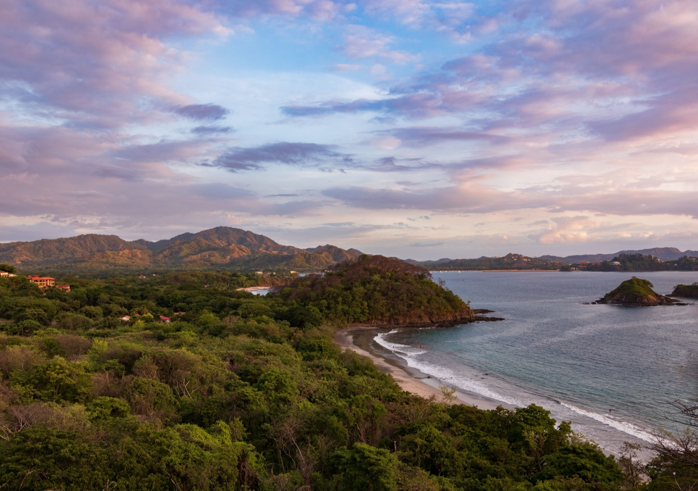

Lo que Costa Rica te pide a cambio
What Costa Rica asks of you
Todo lugar pide algo. Estas son las contrapartidas reales, escritas por alguien que cree que valen la pena.
Every place asks something. These are the real trade-offs, written by someone who thinks they're worth it.

No creo en las listas de "lo que nadie te dice". Todo esto lo dice alguien; simplemente lo dice de pasada, en una frase, entre dos párrafos sobre tucanes. La diferencia entre una contrapartida mencionada y una contrapartida presupuestada es todo el primer año.
I don't believe in "what nobody tells you" lists. Somebody tells you all of this; they just tell you in passing, in one sentence, between two paragraphs about toucans. The difference between a trade-off mentioned and a trade-off budgeted is your entire first year.
El riesgo real es de propiedad, no de violenciaThe real risk is property, not violence
Costa Rica es de los países más seguros de América Latina y el crimen violento rara vez toca la vida de un extranjero. Lo que sí pasa, y ha aumentado en zonas turísticas, es el robo de oportunidad: entradas a casas, cosas sacadas de carros, bolsos levantados en la playa.
Costa Rica is one of the safer countries in Latin America and violent crime rarely touches expat life. What does happen, and has risen in tourist areas, is opportunistic theft: break-ins, things taken from cars, bags lifted on the beach.
La respuesta útil no es dramática. Es cerrar bien la casa, no dejar nada visible en el carro, y tratar las zonas turísticas con la atención normal de una ciudad. La gente que tiene problemas aquí casi siempre dejó la puerta abierta, literalmente.
The useful response isn't dramatic. It's securing the house properly, leaving nothing visible in the car, and treating tourist areas with normal city awareness. People who have trouble here almost always left the door open, literally.
La temporada verde es en serioThe green season is serious
De mayo a noviembre, aproximadamente, y en las costas es lluvia de verdad, no un chubasco de tarde. Los caminos rurales se deterioran, hay cortes de luz y de agua en algunas zonas, y las tardes se ponen oscuras y pesadas.
May to November, roughly, and on the coasts it's real rain, not an afternoon shower. Rural roads deteriorate, some areas lose power and water, and the afternoons go dark and heavy.
También es cuando el país está más verde y más vacío, y bastantes residentes de largo plazo la prefieren. El error no es la lluvia. El error es decidir si puedes vivir en un lugar habiéndolo visitado solo en febrero.
It's also when the country is greenest and emptiest, and plenty of long-term residents prefer it. The mistake isn't the rain. The mistake is deciding whether you can live somewhere having only visited in February.
Los impuestos de importaciónImport taxes
Un carro usado cuesta bastante más que en Estados Unidos. Los electrodomésticos y la electrónica también. Es la razón por la que Costa Rica se siente cara pese a que la comida local y la mano de obra son baratas: lo que se produce aquí cuesta poco, lo que cruza la aduana cuesta mucho.
A used car costs considerably more than it would in the United States. Appliances and electronics too. It's why Costa Rica feels expensive even though local food and labour are cheap: what's produced here costs little, what crosses customs costs a lot.
El agua en GuanacasteWater in Guanacaste
Guanacaste tiene una estación seca real, que es exactamente por lo que a la gente le gusta. Esa misma estación seca hace que la escasez de agua sea un tema genuino en la zona, no teórico. Si estás mirando propiedad en el Pacífico norte, la pregunta sobre el pozo, la concesión y el suministro en marzo va antes que la pregunta sobre la vista.
Guanacaste has a real dry season, which is exactly why people like it. That same dry season makes water scarcity a genuine issue there, not a theoretical one. If you're looking at property on the north Pacific, the question about the well, the concession and the supply in March comes before the question about the view.
La diferencia de precio dentro de Costa Rica es mayor que la diferencia entre Costa Rica y sus vecinos. Una pareja vive con $1,800 a $2,400 al mes en el Valle de El General y necesita $3,500 a $5,000 para la misma vida en Guanacaste.
The price difference inside Costa Rica is larger than the difference between Costa Rica and its neighbours. A couple lives on $1,800 to $2,400 a month in the Valley of El General and needs $3,500 to $5,000 for the same life in Guanacaste.
Eso quiere decir que el error caro disponible aquí no es elegir el país equivocado. Es elegir el valle equivocado y comprar una casa en él.
Which means the expensive mistake available here isn't picking the wrong country. It's picking the wrong valley and then buying a house in it.
Y por qué la gente se queda igualAnd why people stay anyway
Porque la Caja acepta a todo el mundo, a cualquier edad, con cualquier condición preexistente, y eso a los sesenta y cinco vale más de lo que parece a los cuarenta. Porque hay una democracia estable sin ejército desde 1948. Porque la naturaleza no es marketing. Y porque las contrapartidas de arriba son manejables si las presupuestas, que es todo lo que este texto intenta hacer.
Because the Caja accepts everyone, at any age, with any pre-existing condition, and at sixty-five that's worth more than it looks at forty. Because it's a stable democracy with no army since 1948. Because the nature isn't marketing. And because the trade-offs above are all manageable if you budget them, which is the entire point of writing them down.
La lentitud, y por qué no es hostilidadThe slowness, and why it isn't hostility
Los trámites son la queja más universal y la más malentendida. Nada aquí se mueve al ritmo que espera alguien que viene de Estados Unidos: abrir una cuenta bancaria toma semanas, conectar servicios toma visitas, y la residencia toma meses de expediente. Las oficinas regionales de San José, Liberia y Limón ni siquiera van al mismo ritmo entre ellas.
The tramites are the most universal complaint and the most misunderstood. Nothing here moves at the pace someone arriving from the United States expects: opening a bank account takes weeks, connecting utilities takes visits, and residency takes months of file-building. The regional offices in San Jose, Liberia and Limon don't even move at the same pace as each other.
Lo que ayuda es entender que no es desorden ni desprecio. Es un país que resuelve las cosas por relación y por presencia física más que por sistema. La gente que se frustra menos es la que deja de pelear con eso y contrata a un gestor local, que existe precisamente para esto y cuesta poco.
What helps is understanding it isn't disorder or disregard. It's a country that resolves things through relationship and physical presence rather than through systems. The people who get least frustrated are the ones who stop fighting it and hire a local gestor, who exists precisely for this and costs little.
Y una consecuencia práctica: presupuesta tiempo, no solo dinero. El primer año en Costa Rica tiene un costo administrativo que nadie pone en la hoja de cálculo, y se paga en tardes.
And one practical consequence: budget time, not just money. The first year in Costa Rica has an administrative cost nobody puts in the spreadsheet, and it's paid in afternoons.
Ninguna de estas cosas debería disuadirte. Todas deberían estar en tu hoja de cálculo antes de que firmes algo.
None of this should put you off. All of it should be in your spreadsheet before you sign anything.
¿Quieres verlo en temporada de lluvia?
Want to see it in the green season?
Es la única prueba que importa. Si vienes entre mayo y noviembre te ayudamos a armar el recorrido por las zonas que estás considerando, con lluvia incluida.
It's the only test that matters. If you come between May and November we'll help you route a trip through the areas you're weighing, rain included.
Explorar Sora Casas →Explore Sora Casas →